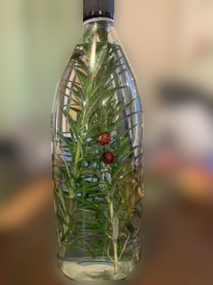

Storytime Spirits
New Zealand · Distillery · Infusions · questions@storytimespirits.com
If you'd like to help us with the journey, please head on over and donate to our Givealittle page
Every bottle has a story, share a story with every bottle™

Homegrown ingredients infused into each recipe – small batch and seasonal varieties.
Floral concoctions – Lavender, Pink Rose, Red Rose, White Rose
Herbal concoctions – Rosemary, Grass, Genovese Basil, Black Opal, Thai Basil, Mint, Sage
Fruits – Feijoa, Orangello, Lemoncello, Elderberry, Blueberry, Plum, Peach, Pear, Apple, Raspberry, Cranberry
Variants – Lemonpeppercello, Cinnamorangello, Rose Mint, Lavender Sage, Lychee Pear, Cinnamint, Vanilla, Coffee, Rosemary Citrus, Rum, Gin, Grappa